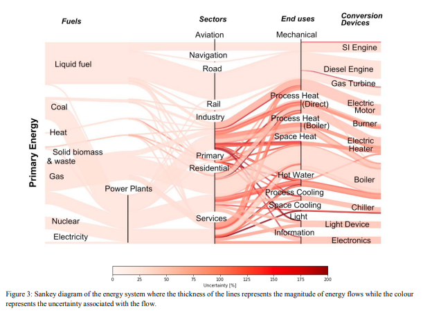
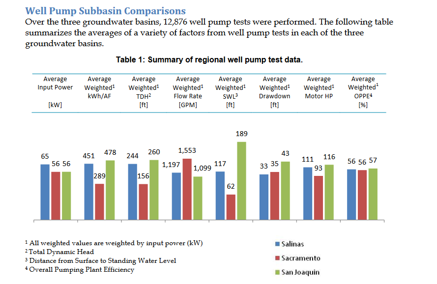

Forage based diets versus ‘concentrate-based’, meaning grain
Concentrate = low-fiber, high energy (mostly a milk cow term?)
“Forage-fed ruminants are a sig source of methane” (compared to what?)
As % of forage in diet increases, so does methane (cite Ellis et al. 2007)
Harvesting forage is an optimization problem: harvest when least mature means more digestible, yummier, higher crude protein, but lower yield
Beauchemin et al. 2011 apparently demonstrated this, but found harvesting ‘hay’ (?) ealier decreased yields by 10%, but everything else was better, and the CO2eq/kg beef decrease 5%
Why would N2O emissions from manure decrease when you harvest earlier?
Does this account for the fact you would probably make more passes if you harvest earlier?
High quality alfalfa goes to dairy cows. Low quality to beef.
Total feed consumed by beef cattle (by weight? by volume?) in North America is 80% (cites Beauchemin et al. 2010)
Using grain reduces methane emissions directly via gut stuff, and indirectly via killing the cow earlier.
If we feed cows corn, it requires less land. Better to have 10 acres of grain and 10 acres of wildlife, versus 5 acres of grain, 15 acres of forage
Thinking about a piece of land, the fuel CO2, N2O, and CH4 are fairly constant, while the amount of CO2 sequestered depends on how much C is already in the soil
“Keeping land IN forages is less valuable compared to converting crop land TO forages”
Lists three main bird species that utilize alfalfa in the San Joaquin Valley of California (because they drained all the wetlands)
White faced ibis. Really likes flooded alfalfa. Prefers it over other croplands.
Long billed curlew. Also closely linked to flood irrigated crops. Audubon did surveys and proved it!
Swainson’s Hawk. They love ag land, but not orchards, vineyards, and urban areas. They breed in Western US and over winter in Argentina! Need trees to nest, so although San Joaquin Valley has lots of alfalfa/ag land, not many hawks because of lack of trees (should be easy to fix!)
Compared two dairy feed situations. They included C sequestration, which is rare.
GHG/kg milk did not differ significantly. Their assumptions were as follows:
A couple of notes on this - no herbicide use in alfalfa. No lime application (all assigned to corn?). Zero percent moisture (for silage?).
They used emission factors from the Holos model (Little, S.M.; Lindeman, J.; Maclean, K.; Janzen, H.H. Holos—A Tool to Estimate and Reduce GHGs from Farms; Methodology and Algorithms for Version 2.0; Agriculture and Agri-Food Canada: Ottawa, ON, Canada, 2013.)
They used the total N input into the system to get N2O. So N from roots was included, assuming a root turnover rate.
Alfalfa makes cows poop more, and for that manure to have a higher N content (?).
Alfalfa had higher N2O emissions because of the assumption that all N inputs are the same, and alfalfa has a large root N contribution. Does the source of N impact N2O emissions?
Breakdown of GHG, not super informative but shows % that can be affected by management:
Both systems are emitting around 40,000 kg CO2eq/ha (per year?). This includes the dairy production part, so I’m not sure how comparable this is to just the alfalfa/corn production piece - based on the above figure I’d guess the crop portion is ~15,000 CO2eq/ha.
The carbon sequestration is around 3,000 kg CO2eq/ha per year.
The carbon you sequester in 5 (crop) or 10 (dairy) years is offset by one year of emissions.
“After a period of 30 years, the model predicted a gain of 87,449 kg soil carbon under the alfalfa system and a loss of 6384 kg carbon under the corn system (Figure 4). If over 30 years the dairy system completed five cycles, producing approximately 11,000,000 kg CO2e, the potential carbon gain from alfalfa and the potential carbon loss from corn represents less than 1% of emissions, implying little impact on soil carbon of switching from hay to an alfalfa silage or corn silage system.”
Camargo 2013 Farm Energy Analysis Tool (FEAT), link doesn’t work, sloppy IMO
They get ~1,500 kg CO2eq/ha/year for alfalfa (the other is red clover):
Advocate for using public datasets
Website referenced in paper does not work, google takes me to sites that violate my privacy…
Compare three different management types for corn
Nice comparison of tools:
FEAT actually used fairly complicated N2O calcs, and they weren’t cited - seemed arbitrary. I’m not sure where they got these values (from literature?), and what they mean by ‘nitrogen’ (urea, ammonium nitrate, ammonia, etc.)
Need to compare these to FTM values
The FEAT database default value for irrigation is 0.014 MJ per cubic meter of water per meter depth of water pumped from a well (Batty and Keller 1980)
Their values are a magnitude lower than Little et al. 2017. They get 1,500 kg CO2eq/ha/year for a perennial legume, compared to Little et al.’s 15,000 kg CO2eq/ha/yr. They had essentially 0 N2O emissions from alfalfa, which isn’t correct given the new IPCC report (which says you need to include all N, including that from above and below ground residues).
“The legume crops did not emit N2O in Van Groenigen and colleagues (2010) and Hoben and colleagues (2011), because their methodology accounts for N from only fertilizer applications and excludes emissions from crop residues.”
NOTE: the new version accounts for below-ground N residues, whereas the 2006 version only included above-ground residues. This change was made specifically to account for alfalfa, where essentially all the above-ground residue is harvested. They provide generic values fro Alfalfa for N content of above and below ground N content, and a ratio and turnover estimates, etc.
They allow for three separate emission factors:
Amount of N2O emitted from various synthetic and organic N applications
Amount emitted from ‘drained managed organic soils’ (?)
Amount from urine and dung deposition from grazing animals
For #1 - they use a default of 1%, but also provide value disaggregated by climate zone and fertilizer type. For example in wet climates, the value is 0.6% of organic N inputs and 1.6% of synthetic N inputs. In dry climates, it is 0.5% for all N inputs. Note this is for direct emissions only.
Conversion of N2O-N emissions to N2O emissions:
\[
N2O = (N2O-N) \cdot \frac {44}{28}
\]
“Natural N2O emissions on managed land are assumed to be equal to emissions on unmanaged land. These latter emissions are very low. Therefore, nearly all emissions on managed land are considered anthropogenic. Estimates using the IPCC methodology are of the same magnitude as total measured emissions from managed land.” (p.11)
Kim 2014 - Meta review of corn LCAs, funded by National Corn Growers
“However, changes to rotation sequences, nutrient cycling and yields of crops within rotations mean that simple attributional LCA of the individual legume crops introduced into rotations does not adequately represent consequences for the environmental efficiency of rotations and related food systems, nor of individual crops within modified rotations.”
Cameron cites this to say ‘reduced tillage and deep rooting systems can provide high carbon inputs throughout the year, increasing soil carbon stocks’. It’s not a great paper.
They claim N2O emissions from summer fallow is a significant contributor to CO2 emissions from field crop production.
Used a model and surveys. Good paper. Showed there’s really no good situation, it’s always a trade-off, higher yields require more environmental damage.
They did things on a per unit dry matter basis. I want to see on a per hectare basis.
Compares results when using models/Tier estimates.
LCAs
Attributional versus consequential LCAs (see Costa et al. for more).
Notaricola 2017
Life cycle thinking is the umbrella term that includes life cycle analysis, life cycle costing, social life cycle assessment, etc.
Criticism might be LCA is yet another field-based metric, when sustainabiltiy demands a consideration of landscape impacts.
Problem: if alfalfa is not grown, where will it be grown? Or will it just not be grown? Hard question.
“Yet, current data available in food LCA databases and life cycle impact assessment (LCIA) models, are mostly non-spatially and temporally resolved (Hauschild et al., 2012).”
Food production in particular can require very specific spatial/temporal resolution. The source of energy production is a good example. In some areas it’s mostly electric, in others it’s mostly coal.
It is important to distinguish between variability and uncertainty in LCAs.
Ex is ‘ozone depletion potential’ or ‘global warming potential’
USEtox is a characterization model for determining human/eco toxicity.
Climate change is just one indicator that can be assessed using life cycle analysis.
Visualizing contributions to the GHG footprint of alfalfa. Sankey/Alluvial diagrams, with the color of the flow based on the uncertainty (or maybe in my case the variability; Paoli 2017):

Fuel emission factors
Super confused. EPA emission factors (which is what FTM uses) have a table that says ‘mobile combustion CO2’:
I do not understand if this is the CO2 released simply from combustion, or if it includes the manufacturing of the fuel as well.
To answer this I tried to calculate things on a molar basis.
The chemical formula for diesel is C12H23 and the molecular weight of C is 12, H is 1.
#Total molecular weight of dieseltot <- (12*12+23*1)# fraction of diesel molecule that is carbonfrac_c <- (12*12)/ totround(frac_c, 2)
[1] 0.86
This means 1 kg of diesel has 0.86 kg of carbon.
Using the same logic, CO2 is 27% carbon by weight. So 1 kg of diesel, with it’s 0.86 kg of carbon would release:
round(0.86/0.27, 2)
[1] 3.19
kg of CO2 per kg diesel. A gallon of diesel weighs 3.23 kg. Therefore the kg of CO2 released per gallon of diesel is:
round(3.19*3.22, 2)
[1] 10.27
This is exactly the value reported in the table. So those values do NOT include the manufacturing energy/GHG used to make the fuel.
The amount of C that can be sequestered globally in soils is equivalent to about 3 years of our current CO2 emissions (40 Gt CO2 per year).
My project
Email from Cameron to Dan
Under the Healthy Soils program, CDFA has worked with expert modelers at Colorado State to adapt a widely used cropping system model (DAYCENT) for the California context. The GHG benefits for eligible healthy soils practices are estimated using this online calculator (http://comet-planner-cdfahsp.com/). You enter in a county and management practice, and you can see how much GHG mitigation is predicted (both changes in soil carbon and reduction in N2O or CH4 emissions) as well as the payment to the grower.
I’m attaching the example for alfalfa for Yolo county. I think it is ‘safer’ to use this number in our LCA instead of soil sampling. The modeling methodology is already documented and applied in the real world. This calculator shows the benefit of perennial forages (CPS 512) for soil carbon is quite significant (estimated to be about 2 or 2.5 times higher than what the literature and COMET farm estimate for cover crops, and also double the benefit of no-till estimated by COMET farm).
Under this program, conversion of annual cropland to perennial forages would also generate a payment of around $130/acre for the three year cycle. But as we discussed, a grower could only apply for land that hasn’t been in alfalfa. And the payment actually goes up quite a bit for the different options to cover costs – for example, the highest input option “Pasture and Hay Planting (CPS 512) - Conversion of Annual Cropland to Irrigated Grass/Legume Forage/Biomass Crops-Nonnative High Seeding Rate with Lime” would generate a payment for $475/acre. Importantly, for the different scenarios, the GHG benefits stay the same.
By including this number for soil carbon storage and the savings for N fertilizer on the subsequent crop, I’m guessing this would offset a big chunk of GHG emissions associated with alfalfa production.
I went to the online calculator and manually got values for given practices in Yolo county.
The values seem fairly reasonable.
Adding a perennial to row-crop systems sequesters ~ 0.5 Mg CO2/ha/yr, or ~ 0.2 Mg C/ha/yr
I need to read the citations Cameron provides to get some context.
Spatial units are ‘county-rectified Major Land Resource Areas’, of which there are 227 in the conterminous US:
They sampled 100 points per ‘broad use category’ (what do they mean by that?). For each point, land use was determined using Cropland Data Layers. If a point was on cropland, the rotation history starting in 2009 was repeated backwards until 2000. Average fertilizer rates for each crop came from USDA-ERS 2014 data. “Typical” practices were applied.
N2O emissions follow the US National Greenhouse Gas Inventory (EPA 2019) protocol. Direct emissions were calculated using DayCent. Leached and volatilized N also came from DayCent, then used emission factors to convert to indirect N2O emissions (do these vary by region?)
They calculated the difference between the baseline model run and the conservation model run, then averaged them over the ‘broad use category’ (the same as Major Land Resource Area?). This was translated into an emission reduction coefficient. It also gives minimum and maximum values “showing how emission estimates vary over a range of soil, weather, and agricultural management conditions”. How did they get those? Is it just the minimum and maximum of their 100 samples?
“The values should be interpreted as a average annual value over a 10 year duration”
Credit for reduced N fert in next crop
From 2019 IPCC section:
There is 0.005 (0-0.011) kg N2O-N emitted per kg N applied. Also from that section, to get kg N2O from kg N2O-N you multiply by 44/28. Then, 1 kg of N2O is equivalent to 298 kg CO2.
#--in kg of CO2round(0.005* (44/28) *298, 2)
[1] 2.34
#--in Mg of CO2round(0.005* (44/28) *298, 2)/1000
[1] 0.00234
So each kg of N you avoid gives you a credit of 2.34 kg of CO2. Or 0.002 Mg CO2eq.
The range presented from the IPCC values goes from 0-0.011. So best case offsets are:
#--in kg of CO2round(0.011* (44/28) *298, 2)/1000
[1] 0.00515
Irrigation pump energy
Martindill et al. 2021 estimated how much ground water is being pumped in California by using the amount of energy being used. They present a equation:
In our case we know the water amount, we can get the ‘overall pumping plant efficiency’ from somewhere, and we can get H from somewhere.
Burt 2011 published regional averages of pump test report results.

It doesn’t have the exact
Measured groundwater depths are now available statewide from the California Statewide Groundwater Elevation Monitoring program (CASGEM), established in 2009, and from groundwater contour maps available on DWR’s Groundwater Information Center Interactive Map Application (GICIMA), established in 2016


 A couple of notes on this - no herbicide use in alfalfa. No lime application (all assigned to corn?). Zero percent moisture (for silage?).
A couple of notes on this - no herbicide use in alfalfa. No lime application (all assigned to corn?). Zero percent moisture (for silage?).